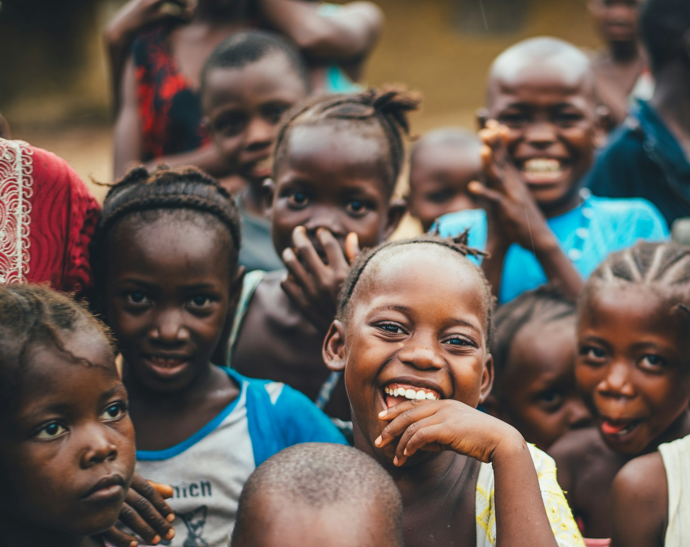

WASH Pathway
Water, Sanitation & Hygiene
Strengthening access to safe water, improved sanitation, and healthy hygiene practices for vulnerable communities.
Learn More


Connecting people in the fight against poverty — investing in children, adolescents, and youth across 9 districts in Uganda.
Guided by a commitment to social justice, equity, and integrity, we work to build a better future for vulnerable communities.
We envision a world where children, youths, and communities are empowered to live sustainable lives.
Working together to connect people in the fight against poverty, investing in the lives of children, adolescents and youth, building the healthy environments they need to thrive, and empowering them to create lasting change in their own lives and communities.
Fair treatment and equal opportunities for all.
Addressing disparities in access to resources.
Equal rights and dignity for every person.
Honesty and transparency in all operations.
High standards in service delivery.

From clean water access to education subsidies, every program we run is rooted in one belief: when you invest in children and communities, change is permanent.
Strategically designed to address the interconnected challenges facing vulnerable communities.

Supporting orphans and vulnerable children to grow, learn, and thrive in safe and stable environments through education, health, nutrition, and household economic empowerment.
Strengthening access to safe water, improved sanitation, and healthy hygiene practices for vulnerable communities.
Learn More
Empowering youth and women to build sustainable livelihoods while nurturing confident, capable leaders.
Learn More
Advancing community well-being through preventive health, reproductive health services, and mental health support.
Learn More
Responding to immediate household needs while promoting long-term environmental responsibility and resilience.
Learn MoreYour support makes a direct impact on vulnerable children, youth, and families across Greater Masaka.
Your financial contribution directly funds education, healthcare, clean water, and food relief for those who need it most.
Donate NowJoin our team on the ground and contribute your skills and time to creating tangible change in people's lives.
Get InvolvedOrganizations and institutions can amplify their impact by partnering with MRF to create sustainable change.
Become a Partner
"Thanks to MRF's education subsidy, I was able to return to school after two years. Now I have hope for my future and I dream of becoming a teacher to help other children like me."
"MRF's biggest legacy is the impact it has had on children, their mothers, youth and communities empowered to achieving social justice and peace. We look forward to working with you as we extend assistance and relief everywhere."

We are grateful for the collaboration and support of our partners in creating lasting change.